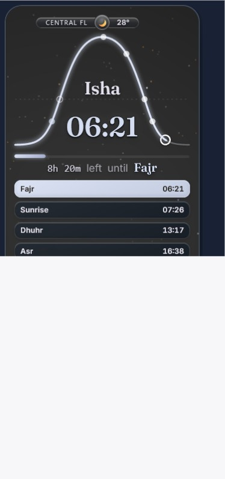
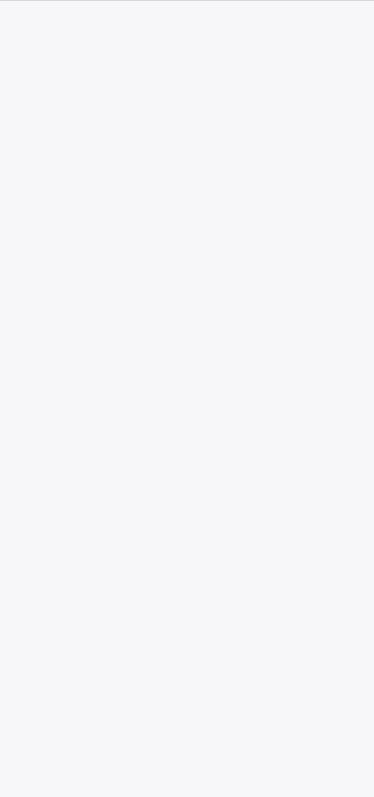
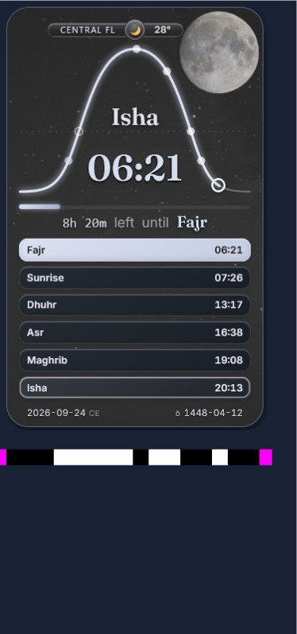

Event timestamp 2306.586 ms.

Event timestamp 4297.612 ms.

Event timestamp 11244.75 ms.

These are original bytes extracted from the existing trace, without re-encoding or cropping. The failed frames remain failed. Different event times are shown; they do not identify the same committed paint or establish independent capture paths.



The missing discriminator is a same-frame association between PageTarget/document, selected surface/backend, committed paint, pre-JPEG pixels and returned JPEG bytes. This package is prepared for the tooling owner; it has not been sent and does not authorize a browser build or recording substitution.